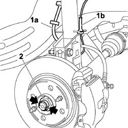
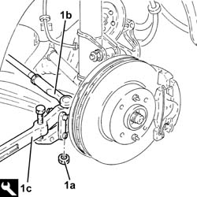
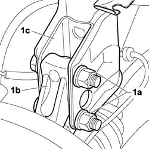
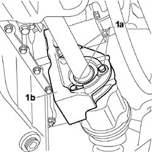
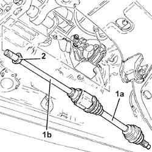
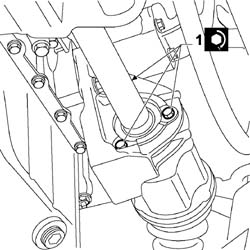
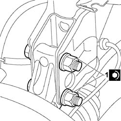
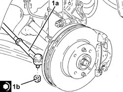
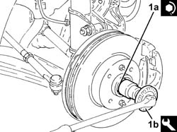
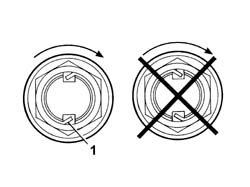

2710A14 right hand drive shaft with joints - r+r
- Path
- Procedures > 27 AXLE > 2710 FRONT AXLE > 2710A drive shafts and joints > 2710A14 right hand drive shaft with joints - r+r
- Kind
- repair procedure (removal / refitting; the operation number is the code)
- Applies to
- engines: 1.3 JTD 16V; all production periods
- Interactive page
- https://sloeber94.github.io/elrnDB-fDbl/en/#/2584607
Applies to: engines: 1.3 JTD 16V; all production periods
 Removing
Removing
 Refitting
RefittingPosition the car on the ramp.
Ensure that the ignition key is in the OFF position, then disconnect the negative battery terminal.
Carry out
Op. 7055B54 PROTECTION/GUARD UNDER ENGINE - R.R.
Carry out
Op. 4450B04 RIGHT FRONT WHEEL - R.R.
1. Prise up the brake fluid hose to caliper (1a) and wear sensor electrical lead (1b) from the anchorages.
2. Remove the security staking and undo the nut fixing the driveshaft to the front wheel hub.

Applies to: engines: 1.3 JTD 16V; all production periods
1. Undo the nut (1a) and disconnect the steering link (1b) from the steering knuckle using the tool (1c).
 | Name | Country |
|---|---|---|
1c | Head extractor | 1.847.035.000 |

Applies to: engines: 1.3 JTD 16V; all production periods
1. Unscrew bolts (1a) securing the front hub knuckle assembly (1b) to shock absorber (1c).

Applies to: engines: 1.3 JTD 16V; all production periods
Withdraw the front hub steering knuckle assembly from the driveshaft by turning downward.
1. Undo bolts (1a) securing the intermediate driveshaft to mount (1b).

Applies to: engines: 1.3 JTD 16V; all production periods
1. Release the right driveshaft (1a), complete with intermediate driveshaft (1b) and remove it.
2. Remove the dust cover from the drive shaft.

Applies to: engines: 1.3 JTD 16V; all production periods
Refitting
RemovingFit a dust cover on the drive shaft, differential side.
Position the right driveshaft together with the intermediate drive shaft in its seat on the differential, taking the greatest care not to damage the seal.
Position the dust cover in its seat on the differential case.
1. Screw in the intermediate drive shaft bolts to the mount and tighten to the specified torque.
 | Fastening | Component | Ø | Value (daNm) |
|---|---|---|---|---|
1 | - | - | - | - |

Applies to: engines: 1.3 JTD 16V; all production periods
Position the pillar/brake disc assembly in its seat.
1. Screw in the nuts and tighten them to the recommended torque.
| Fastening | Component | Ø | Value (daNm) |
|---|---|---|---|---|
1 | Nut | FRONT SHOCK ABSORBER . LOWER MOUNTING. | M12 x 1.25 | (Steering knuckle side) 12 |

Applies to: engines: 1.3 JTD 16V; all production periods
1. Connect the steering link (1a) to the front steering knuckle and tighten the nut (1b) to the recommended torque.
| Fastening | Component | Ø | Value (daNm) |
|---|---|---|---|---|
1b | Nut | POWER STEERNG BOX LINKS | M10 | (Wheel damper side) 4.5 ÷ 5.5 |

Applies to: engines: 1.3 JTD 16V; all production periods
1. Tighten a new nut f(1a) to secure the front wheel hub to the driveshaft to the recommended torque using the angle tightening tool (1b).
| Fastening | Component | Ø | Value (daNm) |
|---|---|---|---|---|
1a | Nut | FRONT SHOCK ABSORBER . LOWER MOUNTING. | M22 | (Driveshaft side) 7.0 + 55 ° |
| Name | Country |
|---|---|---|
1b | Protractor | 1.860.942.000 |

Applies to: engines: 1.3 JTD 16V; all production periods
1. Stake the collar of the nut twice as shown in the figure.

Applies to: engines: 1.3 JTD 16V; all production periods
Carry out
Op. 4450B04 RIGHT FRONT WHEEL - R.R.
Carry out
Op. 7055B54 PROTECTION/GUARD UNDER ENGINE - R.R.
Connect the battery negative terminal.
Remove the car from the ramps.